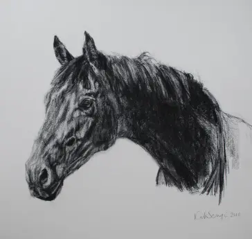
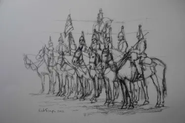
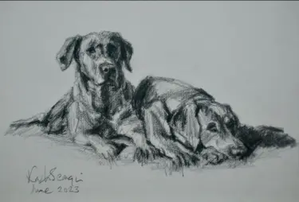
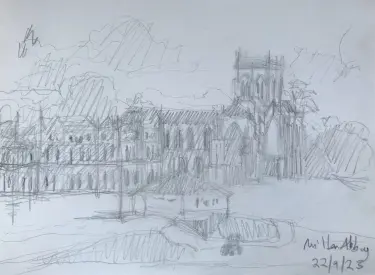

Movement,
held.
Original paintings and drawings made in North Dorset.
Enter the work
Paintings—Drawings—Commissions—From life—
Not a picture
of the moment.
The moment.
Katie paints the energy she knows first-hand: horses gathering themselves before the off, hounds moving as one, and the Dorset landscape changing in the light.
Enquire about available paintingsThe hand
matters.
Before colour, there is line. Katie's charcoal and pencil works catch the character of a horse, a dog or a place with remarkable economy.
See the drawings
FROM LIFE
Works in their
own right.
Original charcoal and pencil drawings sit alongside personal commissions. Each begins with observation, not a formula.



Choose how the work
enters your life.
Former Artist in Residence
Household CavalryMounted Regiment British equestrian and landscape painting, rooted in lived experience.
Come to
The Forge.
The Forge
Hinton St Mary
North Dorset · DT10 1NA
studio visit
Hinton St Mary
North Dorset · DT10 1NA
See new work before it appears online and talk with Katie about a painting or commission.
Plan astudio visit
From the Studio.
New work, private views, exhibition dates and occasional notes from Katie's easel.